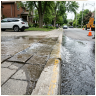
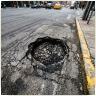
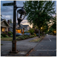

See something broken? Snap it. We push to the city to fix it.
Potholes, dark streetlight, PAM water leaks, or trash piles. Drop photos, track fixes like a food delivery order, and keep authorities accountable.
reports today
fixed this week
days avg response
Take a photo or quick audio of the issue and provide the street location.
Our team verifies evidence and routes directly to the responsible bureau.
Dispatched technicians do the repairs under strict public SLA windows.
Before/after photos published openly so everyone sees the resolution.
Recent Community Reports



In review
CMP-2026-8841
PAM clean drinking water pipeline burst flooding sidewalk in front of Cipete Raya MRT
Jl.Fatmawati Raya No. 42 (depan Stasiun MRT Cipete Raya)
 148
148



Assigned
CMP-2026-8819
Severe 15cm asphalt cavity in TransJakarta corridor causing motorbike rim damage
Jl.Gatot Subroto Kav.38 (depan Menara Mulia, Jalur TransJakarta)
92


Resolved
CMP-2026-8794
Complete PJU streetlight outage spanning 300 meters along residential corridor
Jl.Tebet Barat Dalam Raya No.24, RT 08 / RW 03
64
Search
CMP-2026-8720
Illegal household trash accumulation obstructing drainage at Kuli Krukut Kemang
Kampung Kemang, RT 02 / RW 01 (bantara Kali Krukut)
78